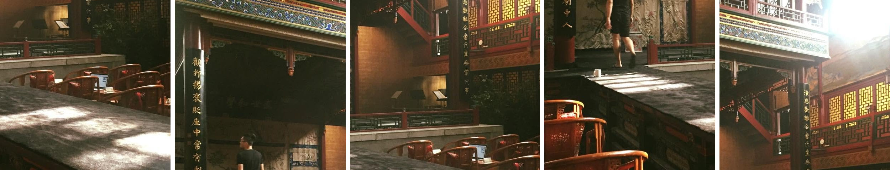

 Physical Sentimental Theatre Company of LeeQingZhao the Private
Physical Sentimental Theatre Company of LeeQingZhao the Private
團隊簡介
2006 年成立，臺灣當代戲曲獨角戲第一品牌「李清照私人劇團感傷動作派」，純美、感傷、死去活來。
團名援詞家李清照（1084–約1155），期許藉其文學音律之好，開展支解雅俗再劃傳統的內部革命。仗其感傷之道，重探東亞現代性中當下傳統諸禁忌。
「李」團至今推出超過 25 個原創劇目，轉移在京劇、客家戲、歌仔戲、歌舞伎等東亞傳統戲曲劇種之間，長年深耕「當下傳統」的國際合作網絡。李團作品風格鮮明、語彙獨特，尤其有為數較多的獨角戲作品，從文本到表演，以演員為中心的創作路線在台灣當代劇場界已具指標性。
「李」團作品曾多次入圍台新藝術獎、傳藝金曲獎、電視金鐘獎。發行的戲曲爵士專輯中，《馬伯司氏》（第 29 屆）、《湘蘭圖》（第 36 屆）與《歌仔曹七巧》（第 37 屆）三張入圍傳藝金曲獎。
Company Profile
Founded in Taipei in 2006 and named after the Song-dynasty poetess Li Qingzhao (1084–c. 1155), the LQZ Theatre Company is Taiwan’s foremost maker of contemporary traditional-opera monodrama: delicate, sentimental, and devastated.
Borrowing the poetess’s command of literary music, the company set out on an internal revolution that dismantles the barrier between elegance and vulgarity and redraws tradition from within. In its persistent pursuit of sentimentality, it keeps returning to what remains taboo in the immediate tradition of East Asian modernity.
The LQZ has produced more than 25 original works across Peking opera, Hakka opera, Taiwanese opera and kabuki, and has built a long-standing international network around “the immediate tradition.” Its distinctive style rests on an unusually large body of monodrama and on a creative method centred on the performer — for the founding director, actors’ character traits and stage appearances remain a significant source of his literary inspiration.
The company has been nominated for the Taishin Arts Award, the Golden Bell Awards and the Golden Melody Awards for Traditional Arts, the last for three of its jazz-opera albums: Lady Macbeth (29th), Lady Orchid (36th) and Cao Ci Ciao (37th).
劇目
歷年 二十五 部作品見劇作年表。
社群